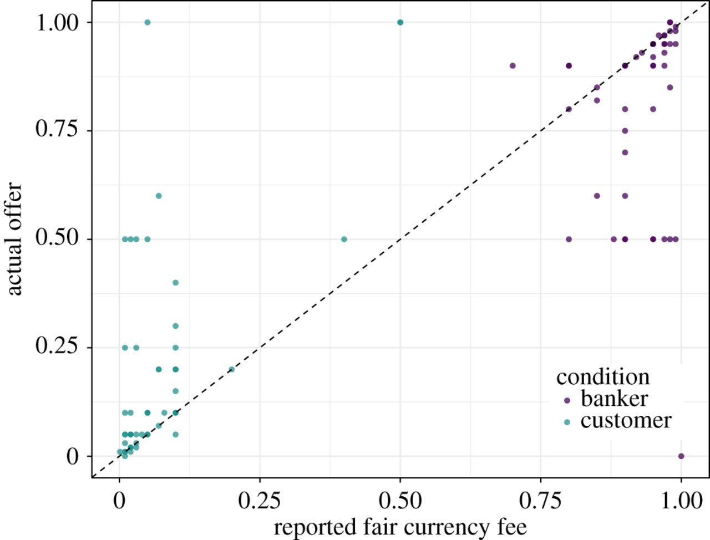

Every genuine test of a theory is an attempt to falsify it, or to refute it. Karl Popper, 1963.
Most social scientists test a substantive hypothesis, which we will call \(H_1\), by instead testing a null hypothesis, \(H_0\), which is usually something like “the mean of X equals 0” or “the correlation of X and Y equals 0.” If the probability of the data1 under \(H_0\) is low (e.g., \(p < 0.05\)), the researcher rejects \(H_0\), which is taken as evidence in favor of \(H_1\).
This approach, termed null hypothesis significance testing (NHST), has been subjected to scathing criticism. In the social sciences, for example, we know \(H_0\) is false before we collect a single data point — the mean of X is never exactly 0, the correlation of two variables is never exactly 0, and so forth. Hence, the rejection of such a null, which Cohen (1994) termed a “nil” hypothesis, just depends on sample size:
Thus far, I have been considering \(H_0\)’s in their most general sense–as propositions about the state of affairs in a population, more particularly, as some specified value of a population parameter. Thus, “the population mean difference is 4” may be an \(H_0\), as may be “the proportion of males in this population is .75” and “the correlation in this population is .20.” But as almost universally used, the null in \(H_0\) is taken to mean nil, zero….My work in power analysis led me to realize that the nil hypothesis is always false.
Further, the rejection of a nil \(H_0\) (which we already know to be false) is exceedingly weak evidence in favor of our pet hypothesis, \(H_1\). First, rejection of a nil is also probably consistent with many other hypotheses. Worse, if \(H_1\) predicts, e.g., the mean of X is greater than 0, the chance of being right is 50-50. Even with this incredibly weak standard, lots of social science studies don’t replicate.
We social scientists might be forgiven for concluding that NHST is deeply flawed. We would be wrong. The problem, instead, is our weak theories.
In the natural sciences, such as physics and chemistry, theories typically predict numerical values for various parameters. Sometimes the predicted value might be 0. Under Einstein’s theory of special relativity, for instance, the speed of light in the direction of the earth’s motion will not differ from the speed of light perpendicular to the earth’s motion. Other times, the predicted values are different from 0. Einstein’s theory of general relativity, for example, predicts that the sun will bend star light by a specific (non-zero) amount. In either case, the predicted value is a substantive \(H_0\) (not a nil) that can be meaningfully tested with NHST.
Unlike rejecting a nil, which social scientists usually take as evidence supporting their theory, rejecting a substantive \(H_0\) rejects the theory! If the difference of the speed of light in one direction vs. another is greater than 0 \((p < 3 \times 10^{-7})\), then special relativity is wrong!2 If the sun bends light more or less than the predicted amount \((p < 3 \times 10^{-7})\) then general relativity is wrong!3 In the natural sciences, NHST is often a powerful tool to challenge theories, not support them (see Figure 1).
Falsifying a theory is an essential step toward developing a better theory.
This critical difference in the use of NHST in the natural vs. social sciences was pointed out by Paul Meehl in 1967:
Because physical theories typically predict numerical values, an improvement in experimental precision reduces the tolerance range and hence increases corroborability. In most psychological research, improved power of a statistical design leads to a prior probability approaching 1⁄2 of finding a significant difference in the theoretically predicted direction. Hence the corroboration yielded by “success” is very weak, and becomes weaker with increased precision. “Statistical significance” plays a logical role in psychology precisely the reverse of its role in physics.
Most theories in the social sciences, including my own, are so weak that they can only predict that a value will be positive or negative, nothing more (e.g., Figure 1A). Such vague predictions make it harder to falsify these theories, therefore impeding development of better theories.
Yet it is certainly possible to develop social science theories that predict specific values, and thus expose themselves to meaningful challenges with NHST.
My graduate student Aaron Lightner and I, for example, recently missed an opportunity to do better science by following standard practice and testing a nil, when we now realize we should have also tested a substantive null. We conducted a classic framing effect study in which we predicted that participants would make different monetary offers in an ultimatum game if it was framed as a currency exchange than if it was “unframed.” We set up our statistical test in the standard social science way. \(H_0\) was a “nil”: no difference in mean offers in the framed vs. unframed condition.
We found a huge effect size (\(d\sim2\); see Figure @ref(fig:effectsize)), and our p-value was very small \((p = 1.8 \times 10^{-31})\). We therefore rejected the nil and concluded that there was a difference in mean offers. Publication! 
We could have put our theory to a much more severe test, however, by proposing a substantive \(H_0\). In our study, participants self-reported what they thought was a fair offer, and they also made actual monetary offers. Our scientific (not statistical) hypothesis was that actual offers would match self-reported fair offers. These, in turn, would match a cultural norm for offers in currency exchange that differed from offers usually seen in the ultimatum game. If a participant reported that 3% was a fair offer, for instance, then he or she should have offered 3%.
As our substantive \(H_0\), we therefore should have proposed this: There will be no difference between actual offers and self-reported fair offers. If we had, we would have found that the probability of our data under such an \(H_0\) was very small4, leading us to reject \(H_0\), and therefore to reject our theory. Specifically, our data showed that although many actual offers were exactly, or very close to, self-reported fair offers (dots that fall on, or close to, the diagonal line), as our theory predicted, many other actual offers differed substantially from self-reported fair offers (dots that are far from the diagonal line), contrary to our prediction:

We don’t even need to compute a p-value to see that we can reject our substantive \(H_0\). Our scientific theory is wrong.
Rejecting a theory is cause for excitement, however, not despair. If a physicist did an experiment that convincingly rejected the null that the speed of light in a vacuum is the same in all inertial frames of reference, she would set off an explosion of research in her discipline and end up with a Nobel Prize.
Make no mistake: Aaron and I were delighted that our study confirmed our prediction that offers in the framed conditions would deviate substantially from the unframed condition (clustering near 0 and 1, instead of near 0.50 as in the standard ultimatum game). But, contrary to our prediction, it also found that many participants said that it would be fair to offer X, but then made a very different offer. Why? Great question for a new study!
In the social sciences we need more “Holy Hand Grenade” theories — theories that do not simply make the very weak prediction that, e.g., \(\bar{X}>0\), which barely deserves to be called a prediction, but instead predict, e.g., that the number shall be three, no more, no less. Such theories can be subjected to severe tests (i.e., potentially falsified) using NHST. Rejecting a substantive \(H_0 = 3\), or failing to reject it, would then represent real scientific progress, not the flip of a coin.
Footnotes
More precisely, for some test statistic \(z\), the p-value is the probability of finding a value of \(z\) equal to or more extreme than that observed, under the assumption that \(H_0\) is true.↩︎
In a recent example, the OPERA experiment mistakenly observed neutrinos traveling faster than light.↩︎
Physicists usually demand much smaller p-values than social scientists, e.g., the \(5\sigma\) rule.↩︎
To compute confidence intervals, we would need to estimate the precision of our measurements, e.g., how closely do self-reported fair offers correspond to participants’ actual beliefs about fair offers? For a detailed example of parameter estimation for a simple physics problem, see Aguilar et al. 2015.↩︎